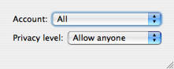

IM Status
An IM Status pagelet displays your availability for chatting using a particular IM (Instant Messaging) client. Visitors can click on the pagelet to open a chat with you. The IM Status pagelet supports iChat (AOL/AIM), Skype and Yahoo! Instant Messenger.
Pagelet Settings
To edit an IM Status pagelet's settings:
- Click the pagelet to select it.
- Open the Selection Inspector. The top of the Inspector contains general pagelet attributes. The other settings, specific to the IM Status pagelet, are listed below.
Service & Username
Select the IM service (iChat or Skype) that you wish to display your status for. Then enter your username for that service.
Important: If you are using an IM Status pagelet with iChat, it will only display "online" or "offline." If you set your status to "away," it will still appear in the pagelet as "online," so be sure to set your status to "offline" to avoid being disturbed.
Please note that for Skype, there are issues when viewing your website from Firefox. When clicking on the skype badge, viewers of your site may be prompted to install Skype, even if it is already installed on their computer. (We have reported this issue to Skype.)
Badge Labels
If you have selected iChat as the service, the text that appears on the pagelet can be customized. When you first create an IM Status pagelet, Sandvox attempts to pick appropriate labels for the site's language.
Privacy Settings
Before you can use an IM Status pagelet, you must ensure your AOL or Skype account is set up correctly to allow it.
If you use Skype:
- Open the Skype application on your computer. (You may need to download and install it first)
- Choose "Preferences…" from the "Skype" menu.
- Go to the "Privacy" controls.
-
Check the box marked "Allow my status to be shown on the web."
If you use iChat:
- Launch iChat and choose "Preferences…" from the "iChat" menu.
- Go to the "Accounts" controls and select your account in the column on the left.
-
In the "Security" tab, set your privacy level to "Allow anyone" or "Block specific people."
If you use AOL/AIM with Adium:
- Launch Adium and choose "Privacy Settings…" from the "Adium" menu.
- From the "Account" popup button, select "All" or your AOL/AIM account.
-
Set the privacy level to "Allow anyone" or "Block certain contacts."
